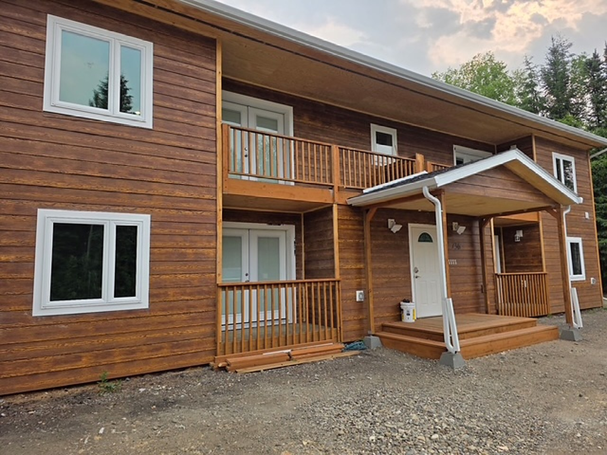
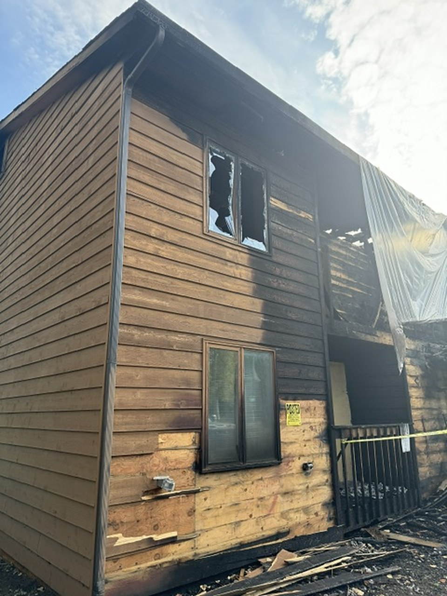
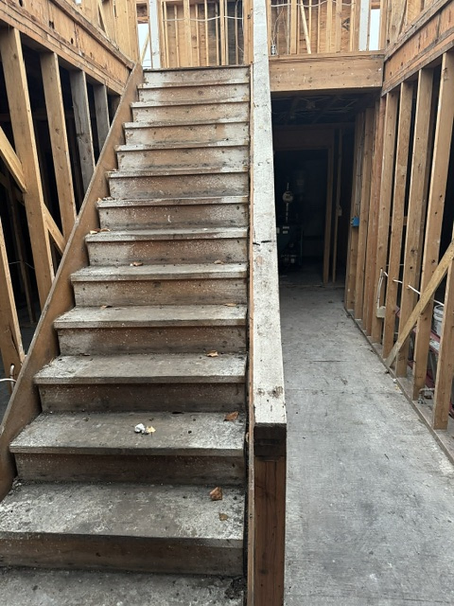
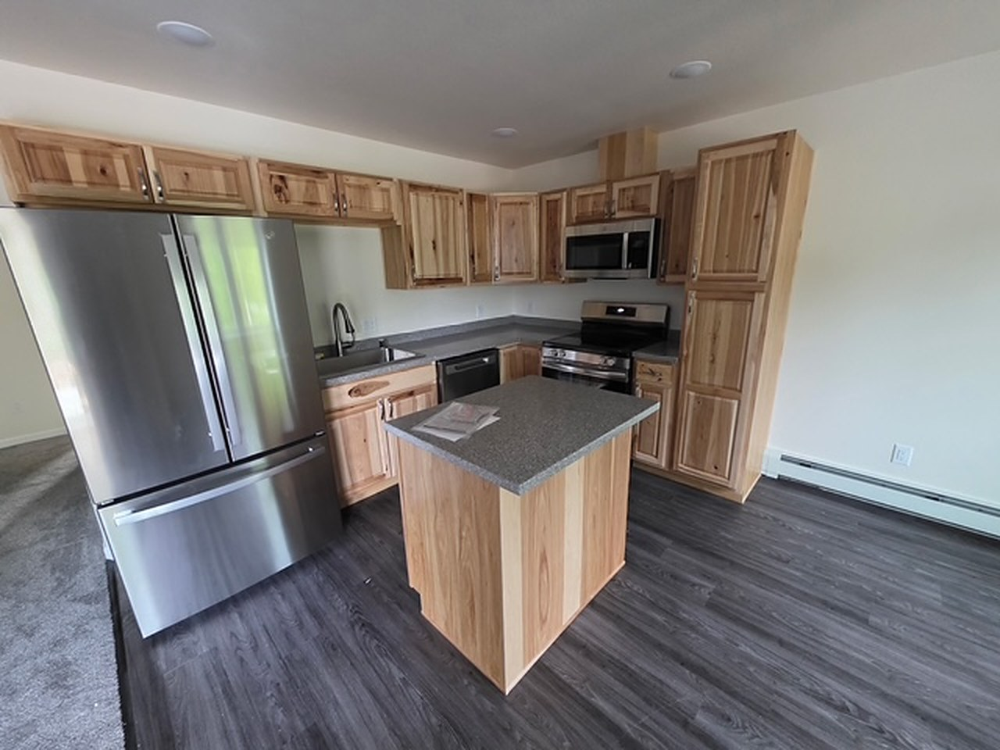

Fire and smoke damage restoration in Fairbanks & North Pole, AlaskaSecure it. Clean it.
Then rebuild.
Fire damages the structure. Smoke and soot travel past the flames. Edstrom Construction secures the building, cleans smoke and soot on surfaces that can be saved, documents the loss and rebuilds. Emergency response is 24/7 in Fairbanks, North Pole and Interior Alaska.
What we do
The building, the smoke, and the rebuild.
This is construction work on a damaged building, plus the smoke and soot cleanup that has to happen before new finishes go on. Edstrom Construction is IICRC certified.
How the job goes
From the fire scene to the final walkthrough.
- 01
Call 24/7
Call (907) 488-0452. Follow the fire department's instructions before anyone goes back in.
- 02
Secure and assess
We close the building against weather, then look at fire, smoke and soot damage room by room.
- 03
Clean and document
We clean what can be saved, remove what cannot, and record the scope before reconstruction covers it.
- 04
Rebuild
We rebuild the structure and finishes and walk the finished building with you.
Insurance claims
We document the fire and bill the building work directly.
You choose who rebuilds. Edstrom works for you. We photograph the fire, smoke and soot damage, write a line-item estimate at current Alaska pricing, meet your adjuster on site, and bill your insurance company directly for the building restoration we perform.
A dwelling claim and a contents claim are not the same thing. We restore the building. Your insurer decides what each part of the policy pays. If the first estimate missed charred framing, smoke in a cavity or a finish, we submit a supplement with the documentation.
Coverage and payment are decided by your policy and your insurance company. A direct bill is not a promise that a claim will be paid, and an estimate is not a coverage decision. Edstrom Construction is a licensed general contractor, not a public adjuster. If something is not covered, or you want an upgrade, we price that work in writing before we do it.
We bill insurance directly
We bill your insurance company directly for the fire and smoke restoration we do on the building. We do not guarantee what the policy will pay.
Fire restoration · North Pole, AK
A fourplex, rebuilt after the fire.
Demolition to move-in ready: framing, siding, balconies, stairs and interiors. These are photos from that job.




Questions
Straight answers.
Do you restore both fire damage and smoke damage?
Yes. We secure the building, remove what the fire destroyed, clean smoke and soot on surfaces that can be saved, and rebuild the structure and finishes.
Are you available 24/7 after a fire?
Yes. Call (907) 488-0452 any time. Edstrom Construction provides 24/7 emergency response in Fairbanks, North Pole and Interior Alaska. Follow the fire department's instructions before anyone re-enters.
Do you bill the insurance company directly?
Yes. We document the damage and bill your insurer directly for the building restoration we perform. Coverage and payment are decided by your policy and your insurance company. We do not guarantee the outcome of a claim.
Can you show a local fire rebuild?
Yes. Edstrom rebuilt a fourplex in North Pole after a fire, from demolition through framing, siding, balconies, stairs and interiors. Photos from that job are on this page and on our restoration page.
Service area
Fairbanks, North Pole and Interior Alaska.
We restore fire and smoke damage in Fairbanks, North Pole and across Interior Alaska. Our shop is at 2135 Richardson Hwy, North Pole, AK 99705. Emergency response is 24/7. Call (907) 488-0452.
- Fairbanks
- North Pole
- Interior Alaska